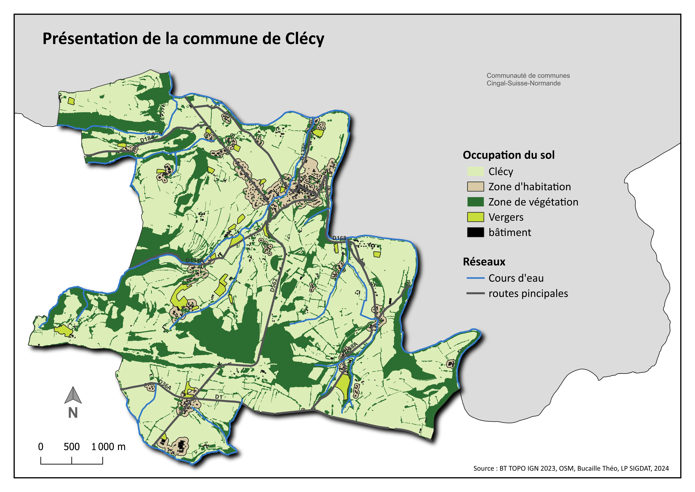

Étudiant en Master Géomatique SIGAT (Systèmes d'Information Géographique et Analyse des Territoires) à l'Université de Rennes 2 et actuellement en stage au sein de Veolia Eau. Je me spécialise autour de la chaîne de traitements et du cycle de vie des données spatiales (acquisition, gestion, analyse, représentation, diffusion et valorisation) et la gestion de projets géomatiques (définitions des besoins, lancement, suivi, évaluation). Je suis apte à saisir et à poser en termes clairs et selon une démarche scientifique et technique, les enjeux liés à la mise en œuvre et au déploiement de SIG dans différents contextes opérationnels.
Stage de 5 mois au sein de l'EPCI "Entre Bièvre et Rhônes" pour la création d'une base de données foncier.
Stage de plus de 3 mois au sein de Veolia Eau.
Création d'un atlas départemental structuré autour de quelques thématiques sur le domaine des réseaux.
Diagnostic territorial de l'EPCI Seulles Terre et Mer (14).
Analyse des réseaux Corsica Ferries et Brittany Ferries à partir de données GTFS ouvertes ainsi que des données AIS
Utilisation de l'imagerie satellitaire (Sentinel-2) pour la détection, l'analyse et la cartographie des zones affectées par les incendies.
Diagnostic de l'éclairage public au sein de la prairie Saint-Martin à Rennes.
Note bibliographique sur les risques des plateformes offshores
Analyse matricielle prospective sur l'installation de parc éolien au large de la Bretagne.
Scoring sur la recherche d'un appartement à Rennes.
La mémoire des défunts dans une commune rurale du Calvados (Balleroy-sur-Drôme) : Identification, conservation et gestion des sépultures
Détection des écotones à partir de données LIDAR et analyse statistique sous R.
Lissage spatial par la méthode des noyaux sur les inégalités à Bogota.
Notre enquête s’intéresse aux conditions de vie des étudiants de l’Université Rennes 2, et plus particulièrement à l’influence de la situation familiale sur leur vie quotidienne.
Création d'une carte interactive sur les stades et les équipes de la compétition.
Projet sur les points d'intérêts touristique dans les commmunes de Deauville et Trouville-sur-Mer.
Projet de découverte de MaplibreGLJS pour la création d'une carte interactive sur les risques d'inondation
Essayez avec d'autres badges ou réinitialisez les filtres





 QGIS
QGIS
 JavaScript
JavaScript
Maîtrise approfondie des principaux logiciels SIG pour la création, l'analyse et la visualisation de données géospatiales.
Solution Geo Software de Ciril Group & Apprentissage de GeoServer en autodidact
Connaissances en programmation pour l'analyse de données.
Connaissances en programmation pour l'analyse de données, l'automatisation de processus et le développement d'applications web.
Dessin assistée par ordinateur : cartographie & infographie.
Un peu d'expérience personnelle grâce à la création de ce site web - en cours d'apprentissage
De nombreux projets individuels et collectifs
Maîtrise des documents de planification structurant et connaissance de leur portée juridique, de leurs articulations et de leur prise en compte dans les politiques publiques d’aménagement, de développement durable et d’égalité des territoires.
Maîtrise approfondie des techniques d'enquêtes par entretiens et par questionnaires.
N'hésitez pas à me contacter pour discuter de projets, stages ou opportunités professionnelles.
gtbe189@gmail.com
Rennes, France